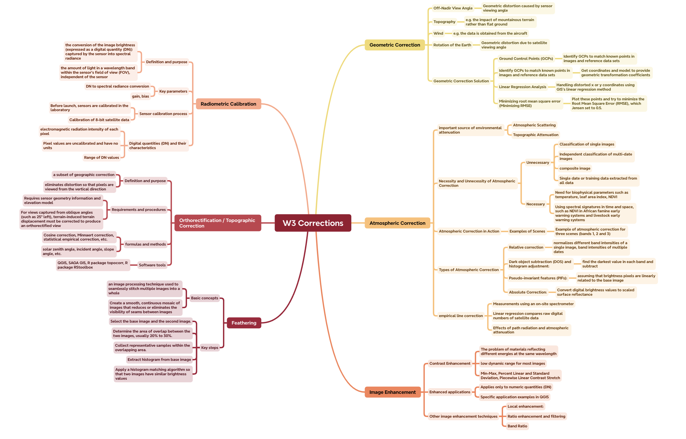
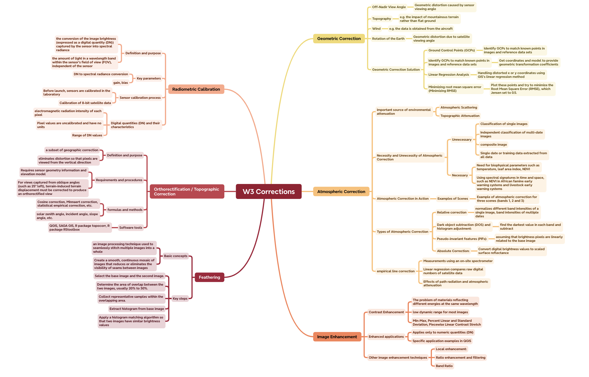

knitr::include_graphics("figures/week2-mindmap.png")
This week’s lecture details the processing and application of remote sensing data. The main parts include: Historical review: Involving the Landsat program and Virginia Norwood’s contributions to remote sensing technology. Remote sensing data correction: Introduces the concepts and methods of geometric correction, atmospheric correction and radiometric correction. Data merging and enhancement: including image stitching, image enhancement and other technologies, emphasizing the importance of these technologies in urban environments. Application Case: Describes the application of remote sensing technology in urban environments, exploring how increasing data complexity or creating new data sets can help achieve specific goals. This is a mind map.
knitr::include_graphics("figures/week2-mindmap.png")
Through this week’s practical content, I learned how to remove the influence of the atmosphere from remote sensing images to obtain more accurate surface information. The document then describes specific techniques such as dark object subtraction (DOS), a method of estimating and correcting atmospheric scattering by subtracting the darkest pixel values from an image. More, I also learned the specific steps and calculation formulas on how to use these technologies to convert received radiation values (such as data captured by remote sensing satellites) into reflectivity. Namely 1. Radiometric calibration: This step converts the raw data captured by the satellite sensor (usually digital image data, that is, DN value) into actual radiance. This requires the use of satellite-specific scaling factors. 2. Atmospheric Correction: Use techniques such as Dark Object Subtraction (DOS) to reduce the effects of atmospheric scattering. This is to remove atmospheric interference from the captured data, resulting in a more accurate representation of actual conditions on the ground. 3. Reflectance conversion: Convert the atmospherically corrected radiance value into reflectance. This typically involves considerations of solar radiation intensity, viewing angle, and other geophysical parameters. This process is critical for analyzing and interpreting remote sensing images, as reflectance more accurately reflects surface properties. Through these technologies and formulas, users can better process and interpret remote sensing data for effective environmental monitoring and analysis.
In the field of remote sensing and image processing, the application of “corrections” is very extensive and important. These correction techniques, such as atmospheric correction (including dark object subtraction DOS), terrain correction, and radiometric correction, are used to improve the quality and accuracy of satellite images. Application areas include: Environmental monitoring: Accurately track forest destruction, droughts, floods, and more. Agriculture: Monitor crop health, assess drought impacts. Urban planning: monitoring of urban expansion and land use changes. Climate change research: looking at glacier retreat, sea level rise, and more. Disaster response: rapid assessment after fire, flood, earthquake.
Specifically, I have a strong interest in the application of atmospheric correction to agriculture. A 2010 study by Chrysolakis et al. compared several atmospheric correction methods used in the Crete region, specifically their impact on land cover classification and change detection. They applied four different atmospheric correction methods to a time series of ASTER images and compared the effects of these methods with the spatial distribution of surface reflectance as a baseline. This comparison uses emissivity and brightness temperature data provided by ASTER Advanced Products. The results show that the DP method provides satisfactory results in the visible, near-infrared and shortwave infrared spectral regions and is therefore suitable for local applications related to land cover and vegetation. In agricultural remote sensing applications, the effective implementation of atmospheric correction techniques is critical to improving the accuracy of surface reflectance data in crop-covered areas. A study evaluated the ability of DOS-COST and AR models to obtain surface reflectance from QuickBird imagery of Minnesota farmland, highlighting model performance in different wavebands and under different atmospheric conditions. The results include an in-depth discussion of the accuracy of the model in the visible and near-infrared bands, as well as adjustments made to improve estimates of atmospheric transmittance in the near-infrared (WU, WANG and BAUER, 2005). This exploration of the impact of atmospheric correction on agricultural monitoring accuracy provides a comprehensive case study of the practical applications and challenges of agricultural remote sensing image analysis.
The two articles are similar in that they both aim to improve the accuracy of surface reflectance extraction from satellite images, reducing atmospheric effects on remote sensing data through atmospheric correction. However, they differ in the data sources used, the study areas, the atmospheric correction methods examined, and the specific way in which their impact on land cover classification and change detection is assessed. The first research focuses on a comparative study of atmospheric corrections over the Crete region of Greece using ASTER data. It explores the study of the impact of several atmospheric correction methods on land cover classification and change detection, covering creating a spatiotemporal distribution database, applying four atmospheric correction methods, and evaluating the impact of atmospheric correction on land cover classification and change detection. The second paper mainly studies image-based atmospheric correction algorithms, using QuickBird satellite data to obtain the surface reflectance of farmland canopy. It compares algorithms such as DOS (Dark Matter Subtraction Technique), COST (Cosine Approximation Model) and AR (Apparent Reflectance Model) and evaluates the accuracy of these models based on ground measurement data.
After delving deeply into this week’s course content on remote sensing data processing and applications, I found that I have a strong interest and curiosity in how to apply this knowledge to a wider field. But again, this is a bit difficult for me. After learning about data correction techniques, I started thinking about how these techniques could be used in current and future research, and how they might open up new avenues of analysis or work. For example, atmospheric correction, terrain correction, and radiometric correction are not only critical for improving the quality of remote sensing images, but also provide us with a means to better understand the Earth system through more accurate data. Mastery of these correction techniques allows me to think about how they can be applied to solve practical problems in areas such as environmental monitoring, agricultural development, and urban planning. In addition, the learning and application of these remote sensing data processing techniques prompted me to think about other potential research areas, such as using remote sensing techniques for climate change research or disaster response. As the impacts of climate change become increasingly apparent, the effective use of remote sensing data to monitor glacier retreat, sea level rise, and extreme climate events has become an important task. This requires not only precise data correction techniques, but also interdisciplinary collaboration and innovative approaches to parse large amounts of data. In the end, I realized that while this week’s course content provided me with valuable knowledge and skills, it was just the beginning. Learning remote sensing techniques and data processing methods opens a way to explore the Earth and our role in it. As technology continues to advance and data sets expand, there will be greater opportunities to explore new questions, discover new insights, and have a profound impact on our world. I look forward to applying this knowledge to my future studies and research, not only to solve existing problems but also to open up new avenues of analysis and work. This week’s learning experience not only strengthened my technical skills, but more importantly, it sparked my interest and curiosity in applying these tools and data to a wider range of disciplines and challenges.